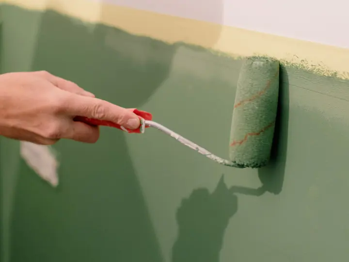
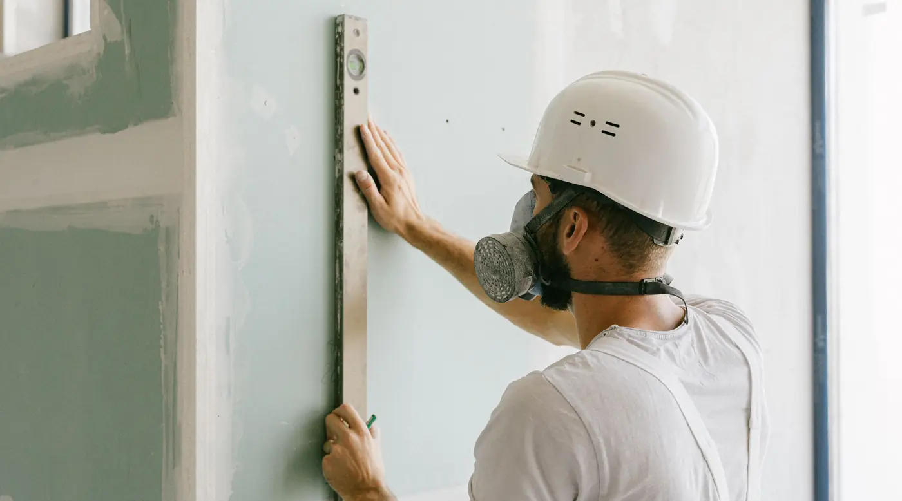
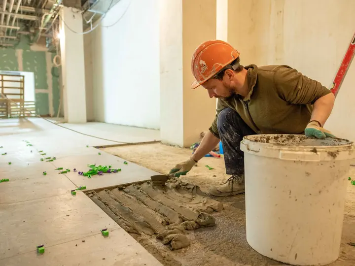
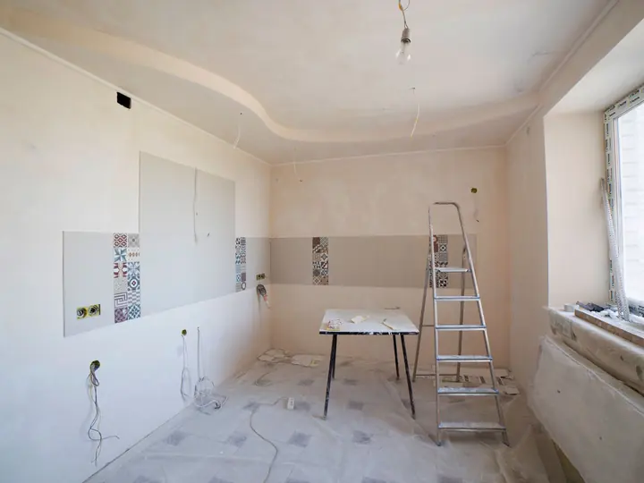
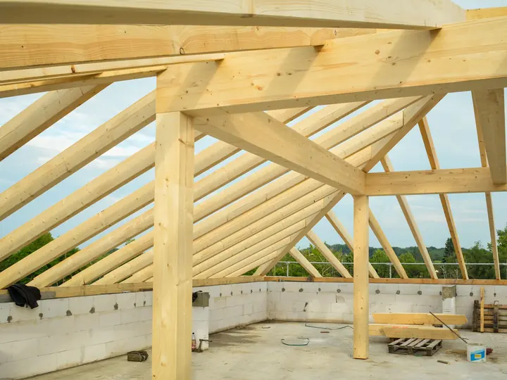
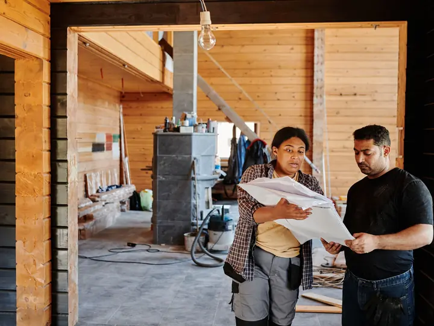
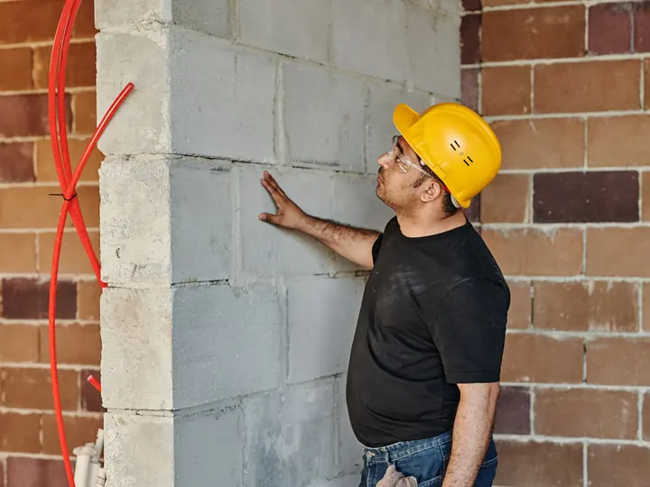
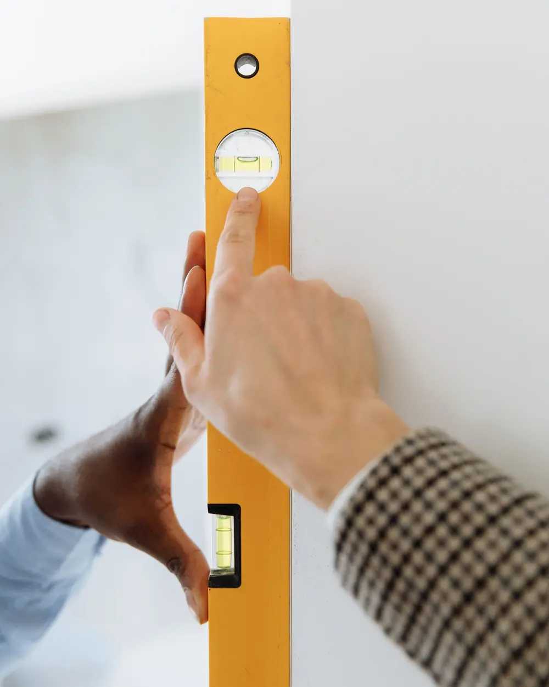
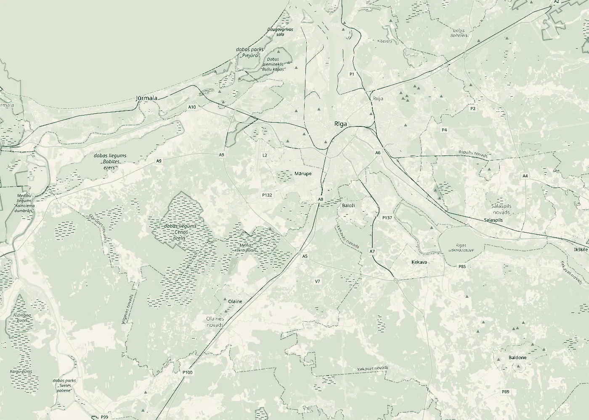

01
Sienas un griesti
Apmetums, špaktelēšana, slīpēšana un krāsošana. Ģipškartona sienas, starpsienas un piekārtie griesti.

Būvkomersantu reģistrāNr. 17207
Olaine · Apdare · Būvdarbi
SIA „RE un DI” no Olaines veic iekšējās apdares un remonta darbus, būvē ēkas, vada būvdarbus un veic būvuzraudzību. Pastāstiet par savu objektu, un mēs atbildēsim ar priekšlikumu.
Pakalpojumi
Apdares un remonta darbi dzīvokļos, mājās un darba telpās, kā arī ēku būvdarbi, to vadīšana un uzraudzība. Ja jūsu darbs nav sarakstā, pajautājiet.

Apmetums, špaktelēšana, slīpēšana un krāsošana. Ģipškartona sienas, starpsienas un piekārtie griesti.

Grīdu izlīdzināšana, flīzēšana virtuvē un vannas istabā, grīdas segumu ieklāšana.

Telpas atjaunošana kopumā: no demontāžas un sagatavošanas līdz tīrai telpai, kurā var ievākties.

Ēku būvniecība, pārbūve un atjaunošana: no konstrukcijām līdz iekšējai apdarei.

Joma BIS reģistrāOrganizējam darbus objektā: secību, cilvēkus, materiālus un termiņus. Kārtojam būvdarbu žurnālu un segto darbu aktus.

Joma BIS reģistrāPārstāvam pasūtītāju: pārbaudām, vai darbi atbilst projektam, normatīviem un līgumam, un fiksējam defektus.

Kvalitāte
Apdarē liela daļa darba vēlāk vairs nav redzama. Tāpēc to pārbaudām pa posmiem, nevis tikai beigās.
Virsma ir sausa, tīra un stingra, pirms uz tās liek apmetumu, līmi vai krāsu.
Sienas, griestus un grīdas pārbaudām ar līmeņrādi un latu, nevis uz aci.
Taisni stūri, aizpildītas šuves un kārtīgas pārejas starp dažādiem materiāliem.
Caurules, vadi un hidroizolācija tiek pārbaudīti, pirms tos aizsedz.
Kopā apskatām telpu, pierakstām piezīmes un tās izlabojam.
Kā strādājam
Pastāstiet, kur atrodas objekts un kas jādara. Ja ir projekts vai fotogrāfijas, pievienojiet tās.
Atbraucam, apskatām objektu un precizējam darbu apjomu un materiālus.
Sagatavojam tāmi un termiņus. Pēc saskaņošanas visu nostiprinām līgumā.
Veicam darbus, uzturam kārtību objektā un nododam gatavu telpu vai ēku.
Uzņēmums
Uzņēmums reģistrēts 2014. gada 9. aprīlī, juridiskā adrese ir Olainē. Kopš 2022. gada 22. marta esam būvkomersantu reģistrā (reģ. Nr. 17207) ar jomu ēku būvdarbu vadīšana un būvuzraudzība. 2024. gadā uzņēmumā strādāja 6 darbinieki.

Olaine Rīga © OpenStreetMapJa jūsu objekts ir Olainē, Olaines novadā, Rīgā vai Pierīgā, zvaniet vai rakstiet. Par citām vietām vienosimies.
Atvērt kartiKontakti
Kas jādara, kur atrodas objekts un kad vēlaties sākt. Atbildēsim un vienosimies par apskati.
+371 26 440 645Par citām vietām vienosimies.